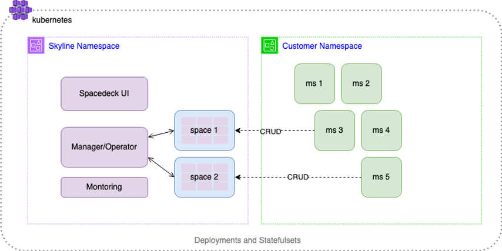
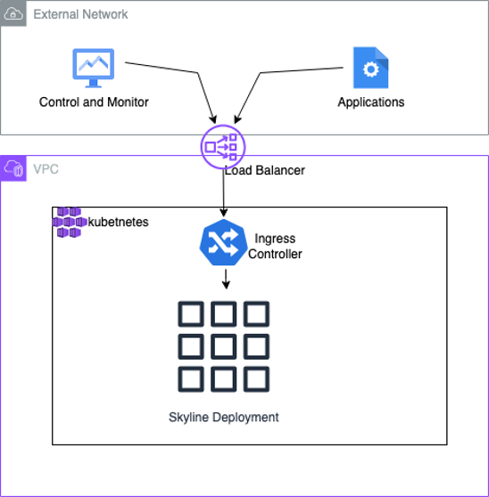
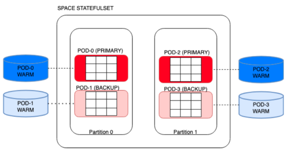
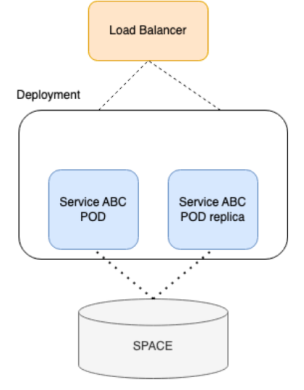

Depending on the requirements and architecture there are many different layouts possible in which to leverage this in-memory fast processing in combination with Kubernetes features. Some of the traits are:
High Availability - using backups and redundancy
Security - zero trust capabilities to protect data in transit and at rest
Maintainability - using monitoring and Kubernetes tools
Follow this guide for installing

In order to access the
Control and Monitor - access given to the Spacedeck (
Application - using data gateway components

The In-Memory Data Grid (IMDG) is at the main part of
Pods that serve the data grid, hold the data in-memory and on disk (see Tiered Storage capabilities). The data grid is divided into partitions and each pod is assigned to hold a partition of the data as well as an availability mode - a “primary” or a “backup”. The Primary pods are online, however, if a primary pod goes down, the backup pod then becomes the primary and a new backup is quickly reassembled. This flow avoids downtime as data is seamlessly served from the pods memory by switching between a primary pod and its backup.
Partitions of the data grid are also backed up by the disk. This is a secondary measure to guarantee high availability. Availability for the data on disk (which can be larger than memory) is maintained by the storage facility and it is kept intact if the pod goes down.
In the diagram below, if POD-0 goes down POD-1 becomes the primary and Kubernetes will create a new POD-0 which will then be tagged as the backup. In the case where a backup is recreated, the memory entries will be copied from the primary.

Low-code services are created by the user in order to open a channel for applications to interact with the data grid using a REST API. Due to this, it is important to maintain their high availability. These services are stateless and
In the diagram below, service “ABC” is replicated and serviced using a load balancer. In the case of one of the services going down the other continues to serve its client.

Authentication and authorization are at the core of the system. Access to every asset of the system is protected by these fundamentals.
Data is encrypted in transit. It is up to the user to open a public access and Gigaspaces will provide means to secure data at transit using protocols such as TLS. The typical connection is within the private network, This can be constructed using networking techniques such as VPN, Private link, VPC peering or other related protocols.
Encryption can be set up by
Kubernetes has built-in mechanisms that expand and contract resources depending on load (given cloud support). This means that during run-time the system deployment is optimized for the current workload.
Kubernetes tools support various operations for managing the system. This includes control resources count, security, metrics and logging parameters.